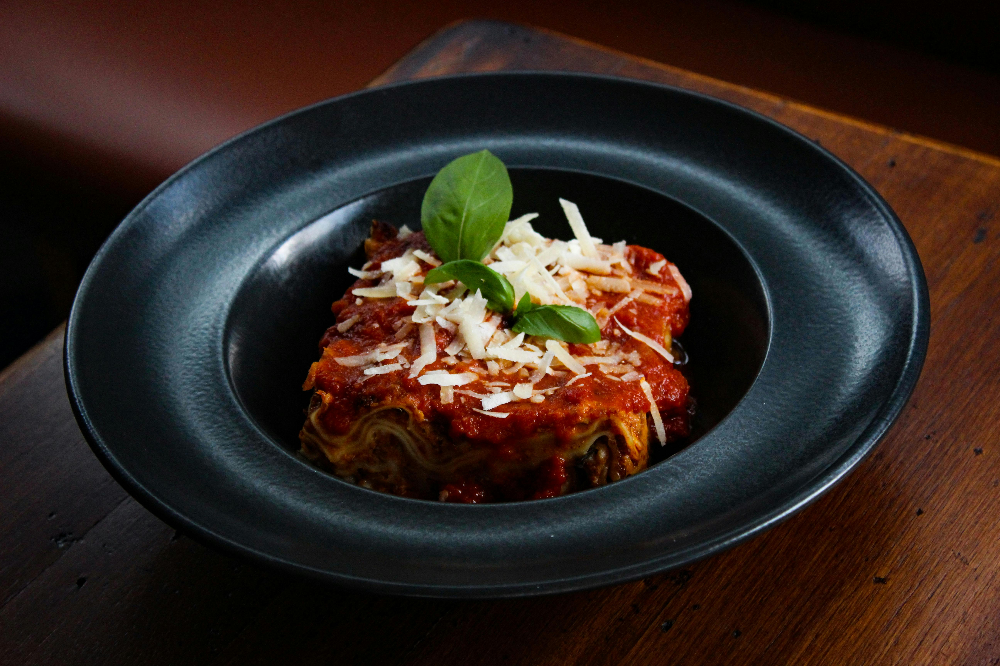

Home

Description
Lasagna is a classic Italian dish made with layers of pasta, sauce (typically Bolognese and béchamel), cheese, and other delicious ingredients. This traditional Bolognese lasagna is made with a rich combination of ground meat, tomato sauce, and spices, layered with creamy white sauce and melted cheese. It's baked until golden and bubbling, resulting in a comforting and flavorful meal. Perfect for special occasions or a family dinner.
Ingredients
- 500g (1 lb) ground beef (or chicken)
- 1 medium onion, chopped
- 2 garlic cloves, chopped
- 1 medium carrot, grated
- 1 celery stalk, chopped(optional)
- 400g(14 oz) tomato sauce
- 2 tablespoons tomato sauce
- 1 teaspoon salt
- 1/2 teaspoon black pepper
- 1 teaspoon sugar
- 1/2 cup red wine(optional)
- 1 bay leaf(optional)
- Olive oil for sautéing
Steps
- In a large pot, heat some olive oil and sauté the onion and garlic until golden.
- Add the ground beef and cook until browned.
- Add the grated carrot, chopped celery, and cook for another 5 minutes.
- Add the tomato sauce, tomato paste, salt, pepper, sugar, and red wine (if using). Let it simmer on low heat for about 30 minutes, stirring occasionally. If necessary, add a bit of water to prevent it from drying out.
- Finish with the bay leaf and adjust seasoning to taste.